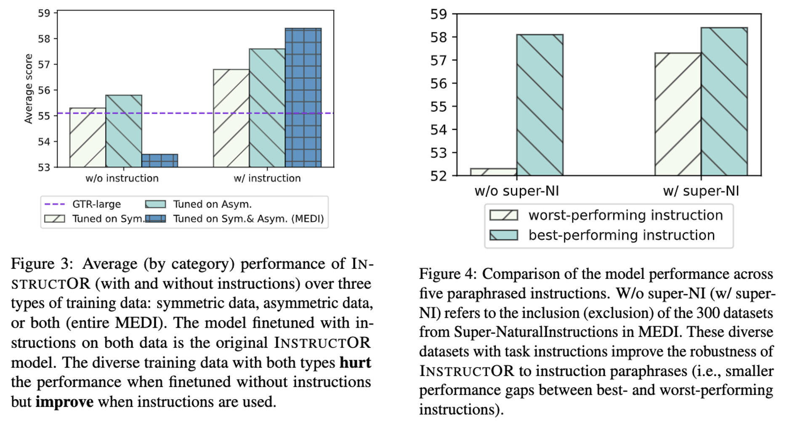
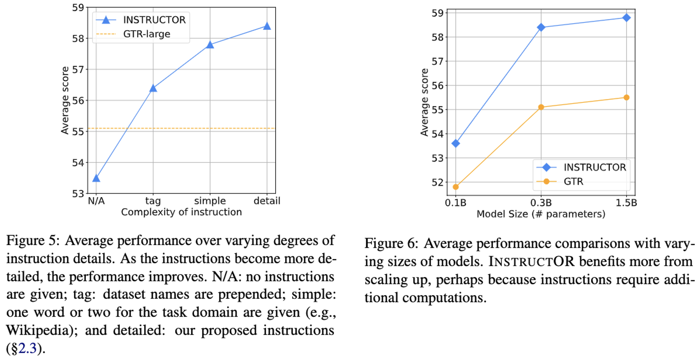
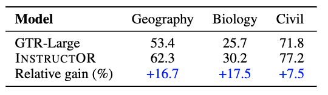
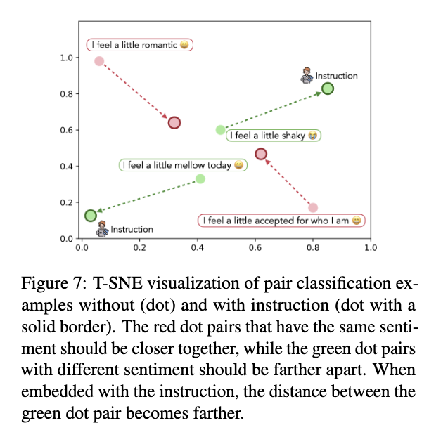
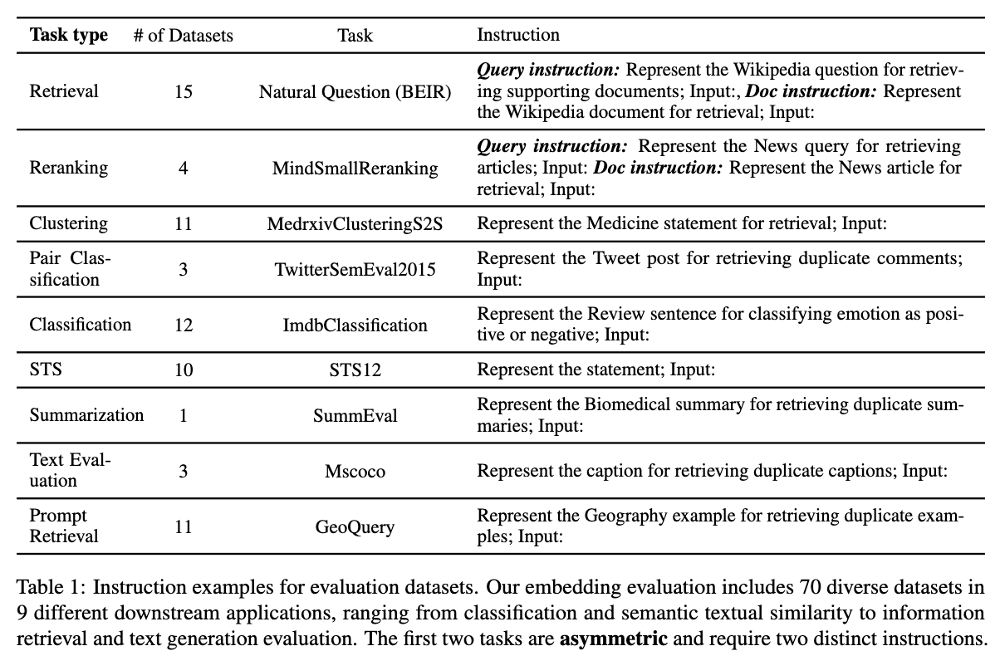

Instructor👨🏫 embedding models are on Huggingface (base, large, xl) 🤗! It is very simple to use!
We introduce INSTRUCTOR, a new method for computing text embeddings given task instructions: every text input is embedded together with instructions explaining the use case (e.g., task and domain descriptions). Unlike encoders from prior work that are more specialized, INSTRUCTOR is a single embedder that can generate text embeddings tailored to different downstream tasks and domains, without any further training. We first annotate instructions for 330 diverse tasks and train INSTRUCTOR on this multitask mixture with a contrastive loss. We evaluate INSTRUCTOR on 70 embedding evaluation tasks (64 of which are unseen during training), ranging from classification and information retrieval to semantic textual similarity and text generation evaluation. INSTRUCTOR, while having an order of magnitude fewer parameters than the previous best model, achieves state-of-the-art performance, with an average improvement of 3.4% compared to the previous best results on the 70 diverse datasets. Our analysis suggests that INSTRUCTOR is robust to changes in instructions, and that instruction finetuning mitigates the challenge of training a single model on diverse datasets.
INSTRUCTOR (335M) is strong because:INSTRUCTOR achieves SOTA performance without further training on a wide range of tasks.
Retri., Pair., Class., Sum., Text Eval. refer to retrieval, pair classification, classification, summarization, and text evaluation, respectively. Compared to GTR(335M/1.5B), from which INSTRUCTOR (335M/1.5B) is initialized, instruction finetuninig enhances the performance by 5.9%. Compared to the state-of-the-art model (Sent-T5-XXL), INSTRUCTOR (335M/1.5B) achieves 3.4% and 4.1% performance gains respectively.
Further, the instruction has shown to be important to the INSTRUCTOR training on diverse data (Left), and super-NaturalInstruction datasets are critical to the INSTRUCTOR robustness of prompt paraphrase.
In addition, by making instruction more detailed (Left) and model size larger (Right), the performance of INSTRUCTOR is consistently improved.
With domain shift in evaluation, the improvement of instruction tuning is more pronounced.

Last but not least, we use T-SNE to visualize two examples. The green dot pair is an example with different sentiment. Without instructions, they are close in the embedding space (probably because they 4 same words in text). With instructions, INSTRUCTOR separates them apart and differentiate their sentiment. For red pairs, they are distant without instructions (probably because they look very different). With instructions, they are closer, which is aligned with their same emotion.


MEDI (Multitask Embeddings Data with Instructions) data consist of a collection of 330 datasets from Super-NI(Super-NaturalInstructions), sentence-transformer embedding training data, and KILT, spanning a wide range of domains and tasks. We construct positive and negative pairs if they are not provided, and store them in a unified format:
{
[{'query': ['Represent the Amazon title for retrieving relevant reviews; Input: ', 'Like a Jason Bourne in the Space Program!', 0], 'pos': ['Represent the Amazon review for retrieval; Input: ', 'Loved it! It is Exciting, interesting, and even including information about the space program.', 1], 'neg': ['Represent the Amazon review for retrieval; Input: ', 'If you love Vegemite the way I do, this is the easiest way to obtain it.', 1]}, {'query': ['Represent the Amazon title for retrieving relevant reviews; Input: ', 'Anderson puts it all together', 0], 'pos': ['Represent the Amazon review for retrieval; Input: ', 'Having observed how techology has spawned new enterprises, I find that Anderson puts it all together in a meaningful and understandable tome. He has found the common thread that will define success and failure in the future.', 1], 'neg': ['Represent the Amazon review for retrieval; Input: ', 'Outstanding device. Very happy I upgraded. The flexibility is endless.', 1]}, {'query': ['Represent the Amazon title for retrieving relevant reviews; Input: ', "I haven't really had a chance to use my purchase ...", 0], 'pos': ['Represent the Amazon review for retrieval; Input: ', "I haven't really had a chance to use my purchase, but it appears to be what I was looking for.", 1], 'neg': ['Represent the Amazon review for retrieval; Input: ', 'My new expandable hose works just as advertised after carefully following the first use instructions - adding pressure very gradually to allow the hose to expand slowly the first time!', 1]}, {'query': ['Represent the Amazon title for retrieving relevant reviews; Input: ', 'works cool, easy to implement', 0], 'pos': ['Represent the Amazon review for retrieval; Input: ', 'works cool, easy to implement, fix a door easily from inside, perfect for tenants with landlords who have lease-enabled entry access.', 1], 'neg': ['Represent the Amazon review for retrieval; Input: ', 'Another page turner ! I am going to research other books by this author as I have not read many and I really enjoy his themes and characters as well as the history.', 1]}]
[{'query': ['Represent the sentence for retrieving duplicate sentences; Input: ', 'An old man with a bag of chips sits with a younger man holding a drink.', 0], 'pos': ['Represent the sentence for retrieving duplicate sentences; Input: ', 'The men have food.', 1], 'neg': ['Represent the sentence for retrieving duplicate sentences; Input: ', 'The men have starved to death.', 1]}, {'query': ['Represent the sentence for retrieving duplicate sentences; Input: ', 'The woman on the left is having her picture taken with another woman who is wearing a tall pink hat.', 0], 'pos': ['Represent the sentence for retrieving duplicate sentences; Input: ', 'Two women are being photographed.', 1], 'neg': ['Represent the sentence for retrieving duplicate sentences; Input: ', 'The woman on the left is taking a picture of the other.', 1]}, {'query': ['Represent the sentence for retrieving duplicate sentences; Input: ', 'Mother and daughter wearing Alice in wonderland customs are posing for a picture.', 0], 'pos': ['Represent the sentence for retrieving duplicate sentences; Input: ', 'Two people are posing for the camera.', 1], 'neg': ['Represent the sentence for retrieving duplicate sentences; Input: ', 'Two people are sleeping at the Disney Castle.', 1]}, {'query': ['Represent the sentence for retrieving duplicate sentences; Input: ', 'A picture of two women with one in lacy white dress with handbag and leggings and the other with a tall red hat, black mid-dress, and frame like plastic dress on top.', 0], 'pos': ['Represent the sentence for retrieving duplicate sentences; Input: ', 'A photo of a couple of females in strange outfits.', 1], 'neg': ['Represent the sentence for retrieving duplicate sentences; Input: ', 'Two females at a bar drinking.', 1]}]
...
[{'query': ['Represent the image caption for retrieving duplicate captions; Input: ', 'Several men standing near a train while other men are walking towards the train. ', 0], 'pos': ['Represent the image caption for retrieving duplicate captions; Input: ', 'A train is on the train tracks while people stand around it.', 1], 'neg': ['Represent the image caption for retrieving duplicate captions; Input: ', "An old toilet that's missing its lid and is vandalized with graffiti.", 1]}, {'query': ['Represent the image caption for retrieving duplicate captions; Input: ', 'A curious cat looking at a yellow bird inside a cage.', 0], 'pos': ['Represent the image caption for retrieving duplicate captions; Input: ', 'A cat near a yellow bird in a cage. ', 1], 'neg': ['Represent the image caption for retrieving duplicate captions; Input: ', 'A giraffe walking through a lush green forest.', 1]}, {'query': ['Represent the image caption for retrieving duplicate captions; Input: ', 'There is a baby elephant all by itself in the cage. ', 0], 'pos': ['Represent the image caption for retrieving duplicate captions; Input: ', 'A small baby elephant biting a rail in a pin.', 1], 'neg': ['Represent the image caption for retrieving duplicate captions; Input: ', 'Books and snacks resting on and around a small table.', 1]}, {'query': ['Represent the image caption for retrieving duplicate captions; Input: ', 'A woman standing on the platform while looking in a train. ', 0], 'pos': ['Represent the image caption for retrieving duplicate captions; Input: ', 'A lady with a luggage cart sticking her head in a train door.', 1], 'neg': ['Represent the image caption for retrieving duplicate captions; Input: ', 'A giraffe that is standing in the grass on a sunny day. ', 1]}]
}@inproceedings{INSTRUCTOR,
title={One Embedder, Any Task: Instruction-Finetuned Text Embeddings},
author={Su, Hongjin and Shi, Weijia and Kasai, Jungo and Wang, Yizhong and Hu, Yushi and Ostendorf, Mari and Yih, Wen-tau and Smith, Noah A. and Zettlemoyer, Luke and Yu, Tao},
url={https://arxiv.org/abs/2212.09741},
year={2022},
}